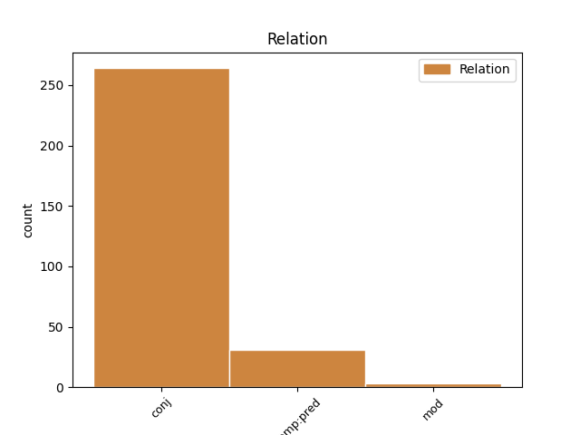
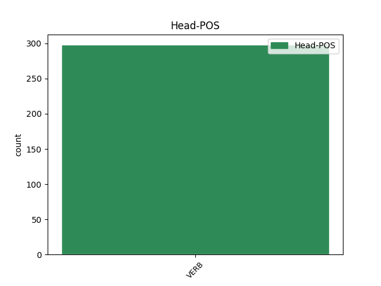
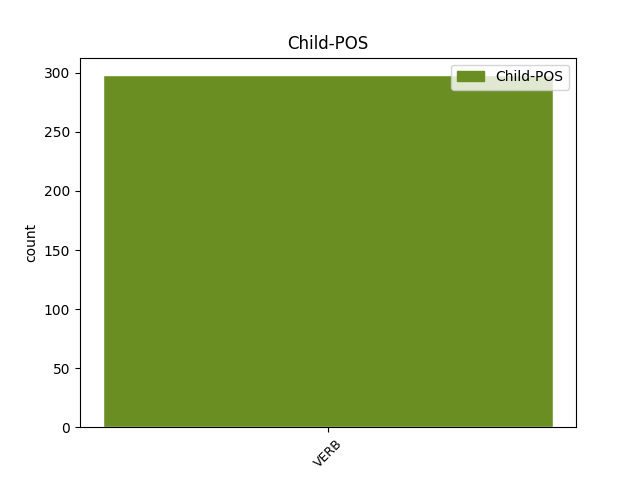

Distribution of features within this leaf



Agreement Rules sorted by frequency.
- When the dependent token is the conjunct(conj) of the head token,
1 A _ _ _ _ 0 _ _ _
2 foc _ _ _ _ 0 _ _ _
3 a _ _ _ _ 0 _ _ _
4 flamma _ _ _ _ 0 _ _ _
5 vai _ _ _ _ 0 _ _ _
6 ardant _ VERB VERppa Tense=Pres|VerbForm=Part 0 _ _ _
7 et _ _ _ _ 0 _ _ _
8 a _ _ _ _ 0 _ _ _
9 gladïes _ _ _ _ 0 _ _ _
10 percutan _ VERB VERppa Tense=Pres|VerbForm=Part 6 conj _ _
1 Et _ _ _ _ 0 _ _ _
2 poez _ _ _ _ 0 _ _ _
3 croire _ _ _ _ 0 _ _ _
4 c' _ _ _ _ 0 _ _ _
5 onques _ _ _ _ 0 _ _ _
6 mes _ _ _ _ 0 _ _ _
7 Ne _ _ _ _ 0 _ _ _
8 fu _ _ _ _ 0 _ _ _
9 de _ _ _ _ 0 _ _ _
10 nule _ _ _ _ 0 _ _ _
11 rien _ _ _ _ 0 _ _ _
12 si _ _ _ _ 0 _ _ _
13 liez _ _ _ _ 0 _ _ _
14 Comant _ _ _ _ 0 _ _ _
15 qu' _ _ _ _ 0 _ _ _
16 il _ _ _ _ 0 _ _ _
17 ait _ _ _ _ 0 _ _ _
18 esté _ VERB VERppe Tense=Past|VerbForm=Part 0 _ _ _
19 iriez _ VERB VERppe Tense=Past|VerbForm=Part 18 comp:pred _ _
1 Apoiez _ VERB VERppe Tense=Past|VerbForm=Part 0 _ _ _
2 fu _ _ _ _ 0 _ _ _
3 sor _ _ _ _ 0 _ _ _
4 sa _ _ _ _ 0 _ _ _
5 maçue _ _ _ _ 0 _ _ _
6 Vestuz _ VERB VERppe Tense=Past|VerbForm=Part 1 mod _ _
7 de _ _ _ _ 0 _ _ _
8 robe _ _ _ _ 0 _ _ _
9 si _ _ _ _ 0 _ _ _
10 estrange _ _ _ _ 0 _ _ _
11 Qu' _ _ _ _ 0 _ _ _
12 il _ _ _ _ 0 _ _ _
13 n' _ _ _ _ 0 _ _ _
14 i _ _ _ _ 0 _ _ _
15 avoit _ _ _ _ 0 _ _ _
16 ne _ _ _ _ 0 _ _ _
17 lin _ _ _ _ 0 _ _ _
18 ne _ _ _ _ 0 _ _ _
19 lange _ _ _ _ 0 _ _ _
Disagree Examples:
1 Ne _ _ _ _ 0 _ _ _
2 finerai _ _ _ _ 0 _ _ _
3 en _ _ _ _ 0 _ _ _
4 trestut _ _ _ _ 0 _ _ _
5 mun _ _ _ _ 0 _ _ _
6 vivant _ _ _ _ 0 _ _ _
7 Josqu' _ _ _ _ 0 _ _ _
8 il _ _ _ _ 0 _ _ _
9 seit _ _ _ _ 0 _ _ _
10 mort _ VERB VERppe Tense=Past|VerbForm=Part 0 _ _ _
11 u _ _ _ _ 0 _ _ _
12 tut _ _ _ _ 0 _ _ _
13 vif _ _ _ _ 0 _ _ _
14 recreant _ VERB VERppa Tense=Pres|VerbForm=Part 10 conj _ _
1 Rendre _ _ _ _ 0 _ _ _
2 le _ _ _ _ 0 _ _ _
3 quidet _ _ _ _ 0 _ _ _
4 u _ _ _ _ 0 _ _ _
5 mort _ VERB VERppe Tense=Past|VerbForm=Part 0 _ _ _
6 o _ _ _ _ 0 _ _ _
7 recreant _ VERB VERppa Tense=Pres|VerbForm=Part 5 conj _ _
1 car _ _ _ _ 0 _ _ _
2 tout _ _ _ _ 0 _ _ _
3 ausi _ _ _ _ 0 _ _ _
4 come _ _ _ _ 0 _ _ _
5 l' _ _ _ _ 0 _ _ _
6 error _ _ _ _ 0 _ _ _
7 et _ _ _ _ 0 _ _ _
8 la _ _ _ _ 0 _ _ _
9 folie _ _ _ _ 0 _ _ _
10 s' _ _ _ _ 0 _ _ _
11 en _ _ _ _ 0 _ _ _
12 foï _ _ _ _ 0 _ _ _
13 par _ _ _ _ 0 _ _ _
14 la _ _ _ _ 0 _ _ _
15 venue _ _ _ _ 0 _ _ _
16 de _ _ _ _ 0 _ _ _
17 lui _ _ _ _ 0 _ _ _
18 et _ _ _ _ 0 _ _ _
19 la _ _ _ _ 0 _ _ _
20 verité _ _ _ _ 0 _ _ _
21 fu _ _ _ _ 0 _ _ _
22 lors _ _ _ _ 0 _ _ _
23 aparanz _ VERB VERppa Tense=Pres|VerbForm=Part 0 _ _ _
24 et _ _ _ _ 0 _ _ _
25 manifestee _ VERB VERppe Tense=Past|VerbForm=Part 23 conj _ _
26 ausint _ _ _ _ 0 _ _ _
27 vos _ _ _ _ 0 _ _ _
28 a _ _ _ _ 0 _ _ _
29 Nostre _ _ _ _ 0 _ _ _
30 Sires _ _ _ _ 0 _ _ _
31 esleu _ _ _ _ 0 _ _ _
32 sor _ _ _ _ 0 _ _ _
33 toz _ _ _ _ 0 _ _ _
34 autres _ _ _ _ 0 _ _ _
35 chevaliers _ _ _ _ 0 _ _ _
36 por _ _ _ _ 0 _ _ _
37 envoier _ _ _ _ 0 _ _ _
38 par _ _ _ _ 0 _ _ _
39 les _ _ _ _ 0 _ _ _
40 estranges _ _ _ _ 0 _ _ _
41 terres _ _ _ _ 0 _ _ _
42 por _ _ _ _ 0 _ _ _
43 abatre _ _ _ _ 0 _ _ _
44 les _ _ _ _ 0 _ _ _
45 grevoses _ _ _ _ 0 _ _ _
46 aventures _ _ _ _ 0 _ _ _
47 et _ _ _ _ 0 _ _ _
48 por _ _ _ _ 0 _ _ _
49 fere _ _ _ _ 0 _ _ _
50 conoistre _ _ _ _ 0 _ _ _
51 coment _ _ _ _ 0 _ _ _
52 eles _ _ _ _ 0 _ _ _
53 sont _ _ _ _ 0 _ _ _
54 avenues _ _ _ _ 0 _ _ _
1 La _ _ _ _ 0 _ _ _
2 la _ _ _ _ 0 _ _ _
3 trovai _ _ _ _ 0 _ _ _
4 si _ _ _ _ 0 _ _ _
5 afeitiee _ VERB VERppe Tense=Past|VerbForm=Part 0 _ _ _
6 Si _ _ _ _ 0 _ _ _
7 bien _ _ _ _ 0 _ _ _
8 parlant _ VERB VERppa Tense=Pres|VerbForm=Part 5 conj _ _
9 si _ _ _ _ 0 _ _ _
10 anseigniee _ _ _ _ 0 _ _ _
11 De _ _ _ _ 0 _ _ _
12 tel _ _ _ _ 0 _ _ _
13 solaz _ _ _ _ 0 _ _ _
14 et _ _ _ _ 0 _ _ _
15 de _ _ _ _ 0 _ _ _
16 tel _ _ _ _ 0 _ _ _
17 estre _ _ _ _ 0 _ _ _
18 Que _ _ _ _ 0 _ _ _
19 mout _ _ _ _ 0 _ _ _
20 m' _ _ _ _ 0 _ _ _
21 i _ _ _ _ 0 _ _ _
22 delitoit _ _ _ _ 0 _ _ _
23 a _ _ _ _ 0 _ _ _
24 estre _ _ _ _ 0 _ _ _
1 La _ _ _ _ 0 _ _ _
2 la _ _ _ _ 0 _ _ _
3 trovai _ _ _ _ 0 _ _ _
4 si _ _ _ _ 0 _ _ _
5 afeitiee _ _ _ _ 0 _ _ _
6 Si _ _ _ _ 0 _ _ _
7 bien _ _ _ _ 0 _ _ _
8 parlant _ VERB VERppa Tense=Pres|VerbForm=Part 0 _ _ _
9 si _ _ _ _ 0 _ _ _
10 anseigniee _ VERB VERppe Tense=Past|VerbForm=Part 8 conj _ _
11 De _ _ _ _ 0 _ _ _
12 tel _ _ _ _ 0 _ _ _
13 solaz _ _ _ _ 0 _ _ _
14 et _ _ _ _ 0 _ _ _
15 de _ _ _ _ 0 _ _ _
16 tel _ _ _ _ 0 _ _ _
17 estre _ _ _ _ 0 _ _ _
18 Que _ _ _ _ 0 _ _ _
19 mout _ _ _ _ 0 _ _ _
20 m' _ _ _ _ 0 _ _ _
21 i _ _ _ _ 0 _ _ _
22 delitoit _ _ _ _ 0 _ _ _
23 a _ _ _ _ 0 _ _ _
24 estre _ _ _ _ 0 _ _ _